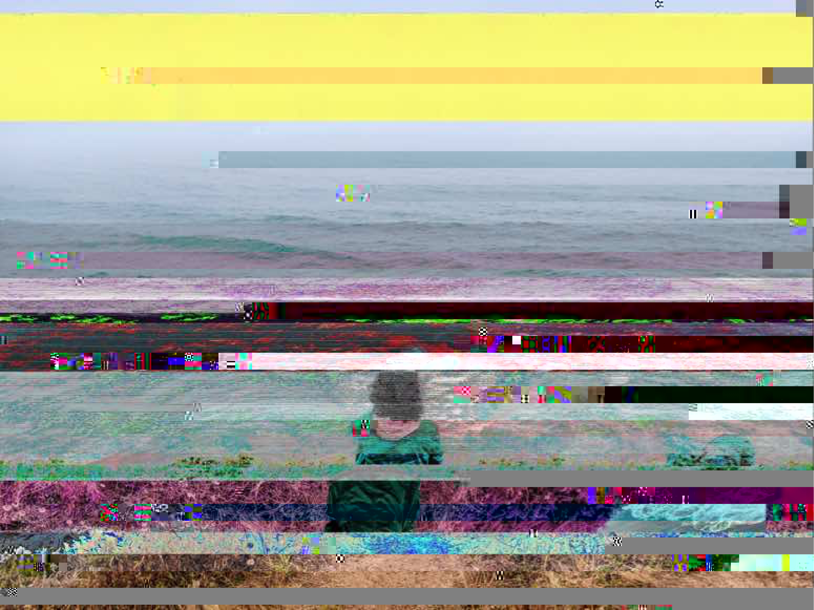

Anjali Suthar
A Glitch in the Matrix
This was a fun project in which I experimented with image manipulation and introducing glitches by corrupting the data of an image. I used a software called Audacity to distort the image. Audacity is an audio editing and recording software. I opened my JPEG files in Audacity, where they were converted to MP3 files. I applied a variety of filters to different parts of the audio and overlapped some filters as well. In this way I kept manipulating the audio, from time to time exporting the MP3 back into JPEG so I can see what the image has turned into (and to ensure that the glitches I am introducing don't go so far as to break the image). In the end I got the image on the left and decided I was happy with how far it had been glitched.
I quite enjoyed the fact that this is a process in which the artist has little to no control over the final outcome. It is a nice parallel to the way life works sometimes. We as humans like to think we are in control but the truth is we have very little control. And yet life can produce the most beautiful outcomes, especially when unexpected.